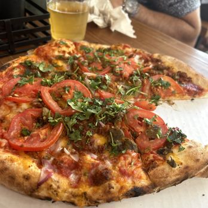
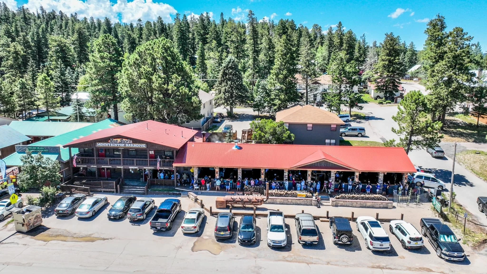
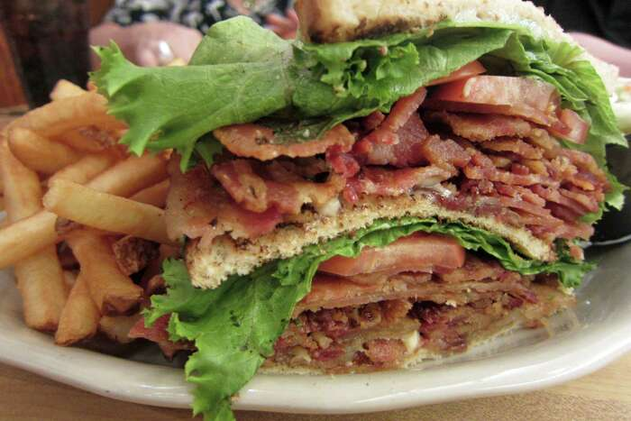
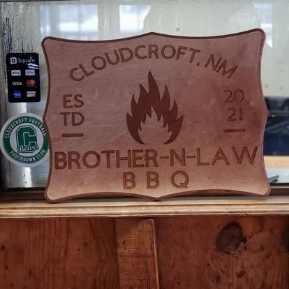
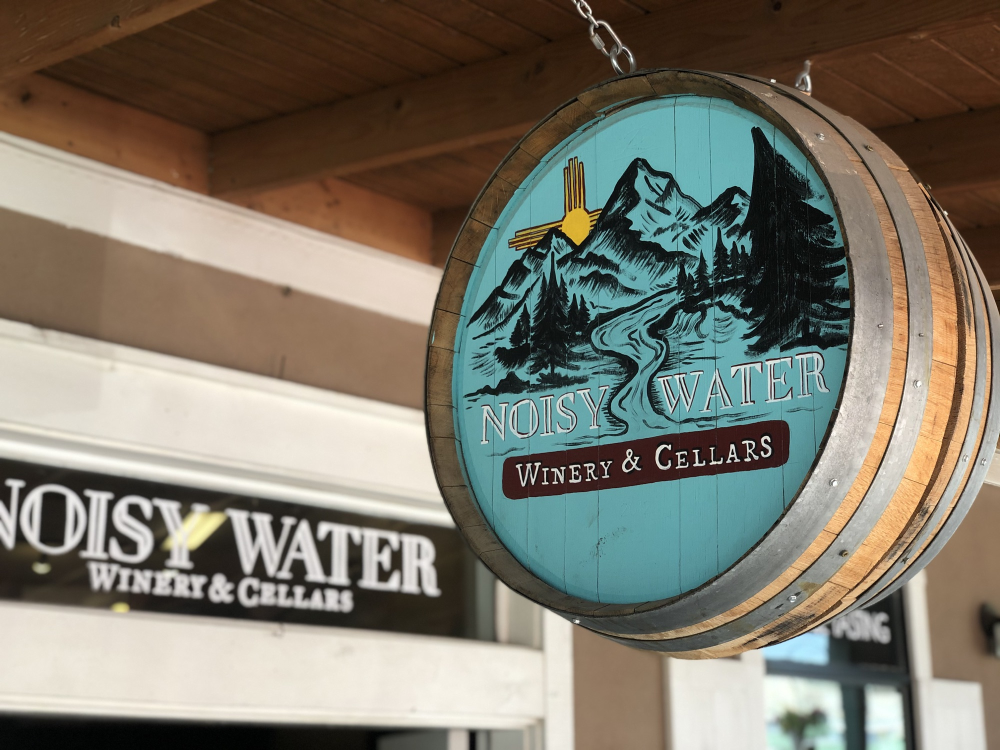
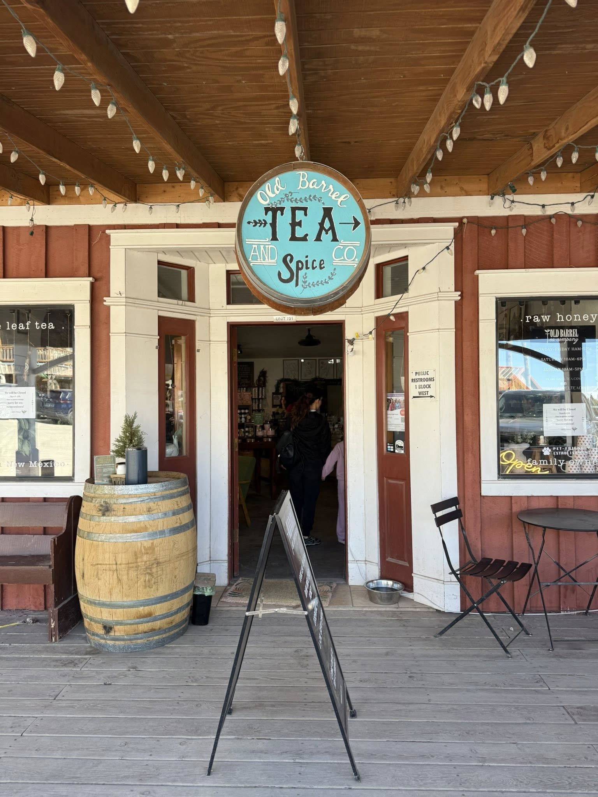
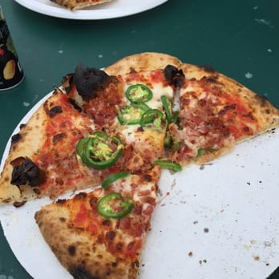
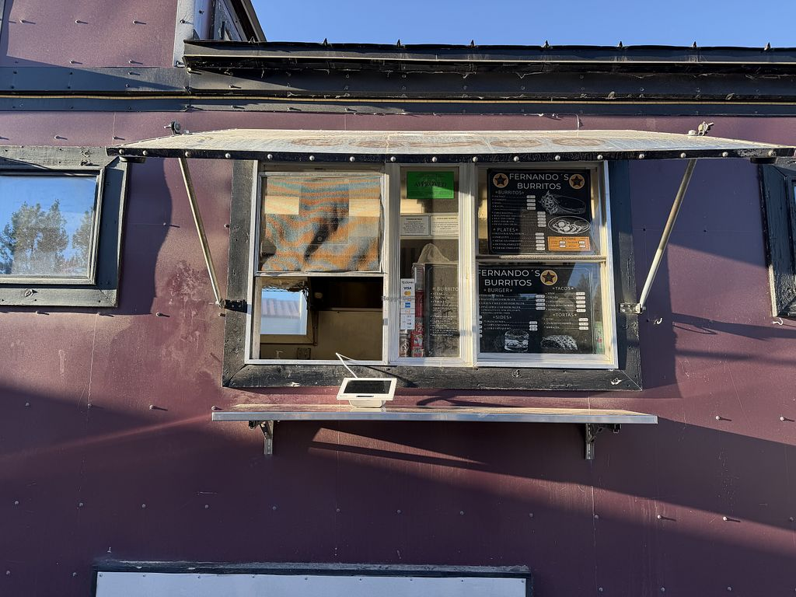

Cloudcroft Dining at a Glance
Cloudcroft’s dining scene is independent, seasonal, and small-scale. No chains. Burro Avenue is the walkable core with coffee shops, bakeries, a tea shop, a sandwich counter, bars, and galleries. James Canyon Highway has roadside spots — BBQ, country cooking, diners. The Lodge offers the only fine-dining option.
Hours shift by season and staffing. Many places close early or reduce days off-season. The dining here rewards flexibility and a willingness to call ahead.
Cloudcroft is a small village. Late-night dining options are very limited. Plan your meals around posted hours, and don’t assume anything is open past 8 or 9 PM outside of summer weekends.
Every Dining Option in Cloudcroft
Cloudcroft’s dining runs from a chef-driven fine-dining room to roadside BBQ, with coffee shops, bakeries, delis, bars, and specialty shops in between. Each spot has its own personality. Below are all the options — click through for full guides with menus, photos, and what to know before you visit.

Eighteen99
Fine DiningThe sole fine-dining option in Cloudcroft, set inside the historic Lodge at the end of Corona Place. Executive Chef Richard Lepree oversees a changing dinner menu — past features have included ahi ceviche and prime New York strip, though specific dishes rotate. St. Andrew’s Lounge serves cocktails in the same space. Open Wednesday through Saturday, 5–8 PM. Reservations are available through the Lodge’s dining page. This is the clear choice for anniversaries, date nights, or any meal where the occasion matters as much as the food.
🌐 223collectionhotels.com

Cloudcroft Brewery
BreweryThe village’s craft brewery and the evening anchor of Burro Avenue. House-brewed ales, IPAs, and lagers on rotating taps, plus in-house distilled spirits including Mountain Smoke Whiskey and Skywater Vodka. The food menu centers on wood-fired pizza — Margherita, Greek, Zia Pie, and build-your-own options with gluten-free crust and vegan cheese available. Live music runs Friday through Sunday evenings; Monday is karaoke night. Open daily except Tuesday, 11 AM–9 PM (10 PM Friday–Saturday). Walk-in friendly, no reservations needed.

Mad Jack’s Mountaintop BBQ
BBQOwner James Jackson grew up in Lockhart, Texas, and drives 644 miles every six to eight weeks to haul authentic post oak for overnight smoking. The menu runs through brisket, ribs, pulled pork, smoked turkey, sausage, and scratch-made sides like potato salad and pinto beans. Desserts by Gracie Jo Grey include fruit cobblers and green chile cornbread. Open Thursday through Sunday at 11 AM, serving until sold out — typically by 3 PM. Weekend lines stretch two to three hours. Arrive early.

Dusty Boots Café
Country CookingA motel café on James Canyon Highway where most of what you eat is made from scratch. Breakfast runs 7 AM to noon daily — biscuits and gravy, French toast, pancakes, and hearty plates. Lunch and dinner bring rotating daily specials: BLTs, chicken strips, patty melts, steak and shrimp. Saturday is German dinner night with schnitzel, sauerbraten, and bratwurst. The restaurant also recently added taco and cantina signage. Beer is available. Gluten-free and nut-free options noted. Summer hours run 7 AM–9 PM; off-season hours may differ.

Black Bear Coffee Shop
Coffee & GalleryMore than a coffee counter. Crystal and Nathan Tompkins run a shop at 200 Burro Avenue that doubles as a petite art gallery with monthly rotating displays. The drink menu goes beyond standard espresso — seasonal offerings have included honey chai and strawberry rose matcha. Gluten-free, dairy-free, and sugar-free options are available. You can also buy roasted beans to take home or have shipped.

Cloudcroft Sandwich Shop
DeliCounter-service deli at 505 Burro Avenue, near the post office. The menu covers fresh subs, paninis, soup of the day, salads, fresh-baked jumbo cookies, and soft-serve ice cream. No reservations, no frills — just a practical midday lunch stop. Open daily 11 AM to 4 PM, closed Wednesdays. This is one of the easier grab-and-go options if you are building a walking afternoon around downtown and want something quick between shops.

Western Bar & Cafe
Bar & GrillThree generations have run this bar and grill at 304 Burro Avenue since 1950. The menu covers all-day breakfast, hand-pattied burgers, green chile cheeseburgers, chicken fried steak, enchiladas, and homemade pies. New Mexican plates round out the dinner side. Open Thursday through Monday, 11 AM to close; closed Wednesdays. Seasonal hours may shift, so a quick call to confirm is worth the effort before walking over.

Brother-N-Law BBQ
BBQCentral Texas barbecue at 209 James Canyon Highway. The meat board runs through sliced brisket (you choose moist or lean), baby back ribs, beef ribs, smoked turkey, BBQ chicken, and jalapeño cheddar sausage. Sides include brisket fries, mac and cheese, and banana pudding. The staff is known for remembering names and keeping the atmosphere personal. Open daily except Thursday, 11 AM to 6 PM. Less of a wait than Mad Jack’s most days, which makes this a strong alternative when time is short.

Big Daddy’s Diner
DinerRoadside diner at 1705 James Canyon Highway with cowboy-heritage decor and a menu that crosses American and New Mexican lines. Rib eye steaks, Texas mesquite smoked BBQ, street tacos, enchiladas, smothered burritos, homemade soups, and pies baked in-house. Open daily 7 AM to 9 PM, which gives it some of the longest hours in the area — useful when other kitchens have already closed. Catering services are also available for groups.

High Rollin’ Coffee
Coffee & CaféOpened in 2023 by former yacht chef Beth Offolter, this from-scratch café at 109 James Canyon Highway takes a different approach to mountain-town food. Espresso drinks, acai bowls, weekly rotating grain bowls, signature daily toasts, muffins, scones, cinnamon rolls, and vegan baked goods. The vibe is warm and intentional — hammock chairs, calm lighting, and a menu built around whole ingredients. Open Monday–Tuesday 8 AM–1 PM, Friday–Sunday 8 AM–3 PM. Closed Wednesday and Thursday.

Noisy Water Winery
WineryA tasting room on Burro Avenue pouring over 30 award-winning New Mexico wines — reds, whites, fruit wines, and a signature green chile wine that draws curiosity from first-time visitors. Beyond the flights, the shop stocks gourmet cheeses, olive oils, and balsamic vinegars. Part wine bar, part specialty retail, part afternoon browsing stop. Hours shift by season, so check the website or call before building your afternoon around a visit.

Dave’s Café
Bar & GrillDavid Venable opened this spot at 300 Burro Avenue in 1984; his son Chuck runs it now. The menu leans toward burgers, breakfast, and grill-style comfort food — the BBQ bacon ranch burger and beer-battered onion rings show up in local mentions. Live music runs throughout the week, giving the place a social layer most Cloudcroft restaurants lack. Hours have been affected by staffing, with Wednesdays and Thursdays sometimes reduced or closed. Check Facebook or call before heading over.

Old Barrel Tea Company
Tea ShopA specialty tea and wellness shop at 505 Burro Avenue, Suite 101. The shelves carry loose-leaf blends mixed by the company, raw honey jarred at their Albuquerque facility, gourmet spices, Mexican vanilla, essential oils, and wellness elixirs. Founded in 2015 in Ruidoso by a female-led, family-run team, with locations now across New Mexico, Colorado, and Arizona. This is not a café — it is a retail stop. Hours are not reliably posted. Call 575-682-7474 before visiting.

Eight the Cake
Bakery & CoffeeA bakery and coffee stop at 506A Burro Avenue with art pieces lining the walls alongside the bakery case. The counter features organic coffee, espresso, signature cinnamon rolls, pies, pastries, and custom cakes. About half a dozen tables provide seating — small but not strictly grab-and-go. The art reads more as decorative backdrop than destination gallery, but it adds visual texture that makes this more of a linger-a-little stop. Featured in New Mexico Magazine and the Cloudcroft Reader. Hours are not consistently posted — check directly before visiting.

Ski Cloudcroft Food Service
PizzaWood-fired pizza served at the Ski Cloudcroft base area on Highway 82. This is not a standalone restaurant — it operates as part of the ski and tubing facility, and food service is tied directly to seasonal recreation operations. When the slopes or tubing runs are open, the pizza operation runs. When they close for the season (the 2025–26 ski season ended March 7 due to warm weather), food service closes too. No year-round hours. Check the ski area directly before driving up.

Levain It Up Sourdough Bakery
BakeryA focused sourdough operation in High Rolls, directly off Highway 82 on the drive between Alamogordo and Cloudcroft. Garrett Barnett and Steven Jackson converted an old building into a small-batch bakery where sourdough loaves, danishes, and rotating baked goods fill the case on weekends. The Cloudcroft Reader profiled the bakery in January 2026. This is grab-and-go only — no seating, no café service. Open Friday through Sunday, 2 to 6 PM. When the bread sells out, the day is done.

Fernando’s
MexicanA Mexican restaurant in the Cloudcroft area. We have not been able to independently confirm current hours, a full menu, or an exact address through the sources available to us at this time. If you are planning to visit, call ahead to confirm they are open and to check what is being served that day. We will update this listing as more information becomes available.

KennaBelles Kreations Bakery
BakeryBaker Kenna Leonard’s shop at 308 Burro Avenue, serving homemade pastries, cookies, cupcakes, and coffee. Cinnamon rolls and pistachio bread are the items locals mention most. The Cloudcroft Reader featured the bakery in 2023 and still included it in a 2025 pantry roundup — a sign it remains woven into daily town life. The case is freshest early in the morning. Older sources note weekday opening around 7 AM, but current hours should be confirmed directly. Call 575-682-2712.
Want the full details? Click any restaurant card to open its dedicated guide with menus, photos, hours, and what to know before you visit.
Best Picks by Category
Best Fine Dining
Eighteen99 — The only chef-driven, reservation-based dinner in Cloudcroft.
Best Breakfast
Dusty Boots Café — Homemade breakfast every morning with biscuits, gravy, and country plates.
Best Burro Ave Walk
Dave’s, Black Bear, Eight the Cake, Sandwich Shop, Old Barrel Tea — All clustered within a few walkable blocks.
Best BBQ
Mad Jack’s or Brother-N-Law — Two dedicated BBQ operations on James Canyon Highway.
Best Coffee
Black Bear Coffee Shop or High Rollin’ — Black Bear for downtown Burro Ave, High Rollin’ for the highway corridor.
Best Bakery
Eight the Cake — Custom cakes, pastries, organic coffee, and art on the walls at 506A Burro Avenue.
Best for Families
Dave’s Café or Dusty Boots — Casual, familiar, and kid-friendly.
Best for Date Night
Eighteen99 — The clearest special-occasion restaurant in town.
Best Unique Experience
Old Barrel Tea for specialty tea, Noisy Water Winery for wine tasting — Two non-restaurant stops that add texture to a Cloudcroft visit.
What Diners Should Know
Seasonal Hours
Most restaurants adjust hours by season and staffing. Summer is peak. Off-season hours may shrink or days may be dropped. Always verify before visiting.
Call Ahead
Small-town staffing means hours can shift without notice. A quick phone call can save you a wasted trip, especially off-season or midweek.
Cash & Card
Most places accept cards, but some smaller operations may prefer or require cash. Carry some just in case.
No Chains
Every restaurant in Cloudcroft is independently owned. Set expectations accordingly — menus are smaller, hours are shorter, and service is personal.
Burro Ave Walking
The downtown corridor is walkable. Coffee, bakeries, tea, sandwiches, and bars are all within a few blocks of each other.
James Canyon Highway
BBQ joints, diners, and roadside spots require a short drive from downtown. Worth the trip for dedicated BBQ and country cooking.
Reservations
Eighteen99 at The Lodge is the one restaurant where reservations are recommended. Most other spots are walk-in.
Late-Night Options
Very limited. Plan your dinner early. Most kitchens close by 8 or 9 PM, and options narrow significantly after dark.
Altitude
Cloudcroft sits around 9,000 feet. Hydrate, take it easy on arrival, and don’t skip meals — altitude can affect appetite and energy.
Best Choices by Occasion
Romantic Dinner
Eighteen99 — The only fine-dining, reservation-based restaurant in Cloudcroft. Cocktails, mountain views, and a chef-driven menu.
Morning Coffee
Black Bear Coffee Shop — Espresso, coffee, and a gallery space on Burro Avenue. The natural starting point for a downtown morning.
Family Lunch
Dave’s Café — Burgers, comfort food, and a casual atmosphere that works for all ages.
Local Character
Dusty Boots Café — Homemade food, German Saturday dinners, and roadside motel nostalgia on James Canyon Highway.
Sweet Treat
Eight the Cake — Custom cakes, cinnamon rolls, pastries, and organic coffee with art on the walls at 506A Burro Avenue.
Grab & Go
Cloudcroft Sandwich Shop — Quick sandwiches, soups, and salads for a fast lunch on Burro Avenue.
Something Different
Old Barrel Tea Company — Loose-leaf tea, honey, spices, and wellness products. Not a restaurant — a specialty shop worth browsing.
The Bottom Line
Cloudcroft’s dining scene is independent, seasonal, and personal. There are no chains, no late-night delivery apps, and no deep bench of backup options. That is the trade-off for eating in a mountain village at 9,000 feet.
The reward is character. A fine-dining room inside a historic lodge. Roadside BBQ on a mountain highway. A bakery-gallery on a walkable main street. A tea shop run by a New Mexico family. These are not interchangeable experiences — they are the texture of a Cloudcroft trip.
Travelers who embrace the small-town pace, call ahead, and plan around posted hours will eat well here. Travelers who expect big-city convenience may find the options limited. Cloudcroft rewards flexibility.
Ready to Eat in Cloudcroft?
From fine dining at The Lodge to roadside BBQ on James Canyon Highway — Cloudcroft’s independent restaurants reward travelers who like character over convenience.